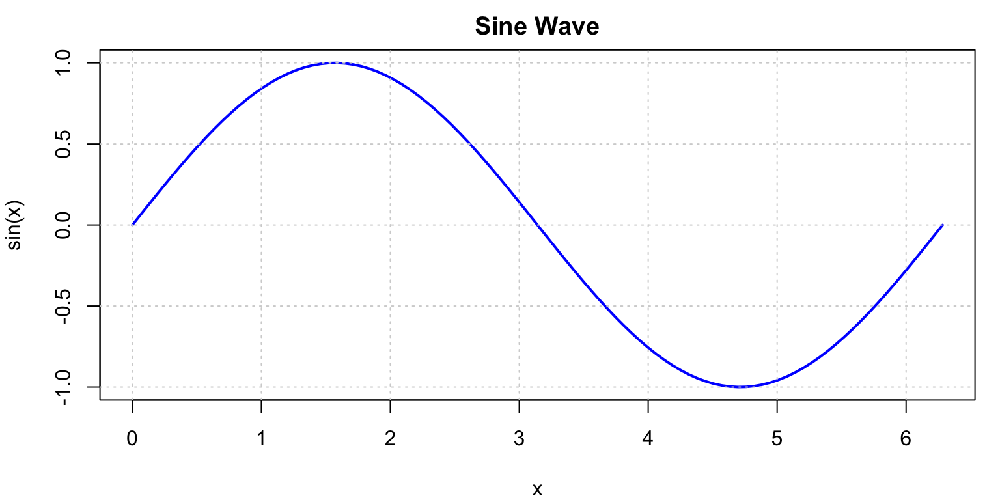
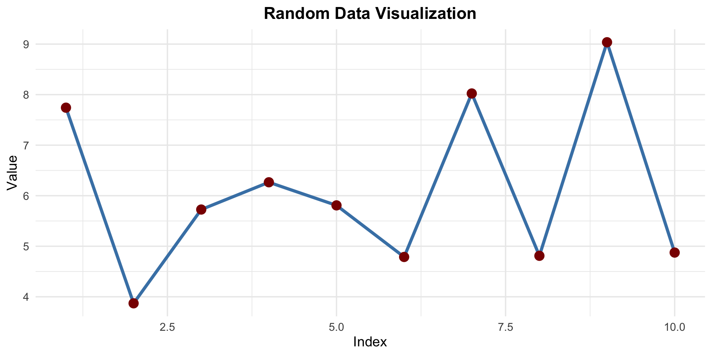
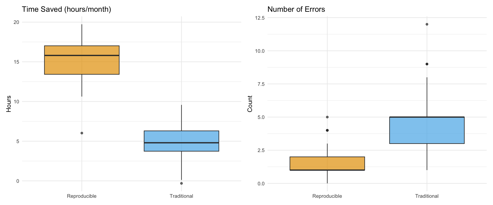

Quarto and MyST Markdown
Maria Oros
The reproducibility crisis, and the core concepts behind fixing it
The ability to recreate scientific findings using:
Credibility
Efficiency
Collaboration
Transparency
A 2016 Nature survey of 1,576 researchers found:
Warning
Irreproducible preclinical research alone is estimated to cost $28 billion/year in the US.
| Term | Same data? | Same code? | Question answered |
|---|---|---|---|
| Reproducible | ✅ | ✅ | Do I get the same result from the same analysis? |
| Replicable | ❌ | ✅ | Does the finding hold with new data? |
| Robust | ✅ | ❌ | Does it hold with a different method? |
| Generalizable | ❌ | ❌ | Does it hold across data and methods? |
Note
This deck focuses on reproducibility — the foundation the others build on.
Code and narrative living in one document
“Instead of instructing a computer what to do, let us concentrate on explaining to humans what we want the computer to do.” — Donald Knuth (1984)
The idea
Why it matters
Language-agnostic scientific publishing
Next-generation scientific publishing system
library(ggplot2)
# Create sample data
set.seed(42)
data <- data.frame(
x = 1:10,
y = rnorm(10, mean = 5, sd = 2)
)
# Create plot with ggplot2
ggplot(data, aes(x = x, y = y)) +
geom_line(color = "steelblue", linewidth = 1.5) +
geom_point(color = "darkred", size = 4) +
theme_minimal(base_size = 14) +
labs(title = "Random Data Visualization",
x = "Index", y = "Value") +
theme(plot.title = element_text(hjust = 0.5, face = "bold"))
library(plotly)
# Create sample data
data <- data.frame(
x = 1:50,
y = cumsum(rnorm(50))
)
# Create interactive plot
plot_ly(data, x = ~x, y = ~y, type = 'scatter', mode = 'lines+markers',
line = list(color = 'rgb(55, 128, 191)', width = 2),
marker = list(size = 6, color = 'rgb(219, 64, 82)')) %>%
layout(title = "Interactive Random Walk",
xaxis = list(title = "Step"),
yaxis = list(title = "Value"))Consistent markdown across all languages
Interactive plots, tables, and widgets
Built-in support for websites, books, blogs
Execute code in multiple engines
Customizable templates and styling
Interactive books, Jupyter, and mybinder
Markedly Structured Text
Here is example MyST syntax:
# My Document
:::{note}
This is a special note block!
:::
Here's an equation: $E = mc^2$
:::{admonition} Important
:class: tip
Remember to document your work!
:::Directives
:::{note}
Special blocks
:::Roles
{kbd}`Ctrl+C`
{file}`data.csv`Executable Notebooks
Jupyter notebooks as sourceCross-references
See {ref}`section-label`Math
$
\int_0^1 x^2 dx = \frac{1}{3}
$Interactive Computing
mybinder integrationBuilt for Jupyter
Publishing Features
Note
MyST excels at creating interactive documentation from Jupyter notebooks
mybinder.org: Turn Git repositories into interactive notebooks
Perfect combination: MyST Markdown + mybinder = Interactive, reproducible documentation
Tip
Users can immediately interact with your analysis without any setup!
Project Features:
Technologies:
open_source_survey_results_myst/
├── _config.yml # Jupyter Book config
├── _toc.yml # Table of contents
├── requirements.txt # Python dependencies
├── notebooks/ # Analysis notebooks
│ ├── demographics.ipynb
│ ├── usage_patterns.ipynb
│ └── visualizations.ipynb
├── data/ # Survey data
└── README.md # With binder badgeKey insight: Everything needed for reproduction in one repo!
1. Add a badge to README.md:
2. Create requirements.txt or environment.yml
3. Push to GitHub
4. Click the badge - done!
Tip
mybinder automatically detects configuration files and builds your environment
flowchart TB
A[Write MyST/Jupyter] --> B[Push to GitHub]
B --> C[Jupyter Book Build]
C --> D[Published Documentation]
B --> E[mybinder Badge]
E --> F[Click Badge]
F --> G[Live Interactive Session]
style D fill:#90EE90
style G fill:#87CEEB
Result: Documentation that readers can read OR execute!
In the Documentation:
In mybinder:
Important
Same environment, guaranteed reproducibility!
# Analysis Results
Here we analyze the survey data:
:::{code-cell} python
import pandas as pd
import matplotlib.pyplot as plt
# Load data
df = pd.read_csv('survey_data.csv')
# Create visualization
df['category'].value_counts().plot(kind='bar')
plt.title('Survey Responses by Category')
plt.show()
:::
The plot above shows clear trends in responses.| Feature | Quarto | MyST Markdown |
|---|---|---|
| Language Support | Multi-language | Python-focused |
| Output Formats | HTML, PDF, PPT, Word | HTML, PDF |
| Ecosystem | Standalone | Jupyter/Sphinx |
| Learning Curve | Moderate | Steeper |
| Best For | Reports, websites, presentations | Books, documentation |
| Interactive | Yes (Observable, Shiny) | Yes (Jupyter widgets) |
| Feature | Quarto | MyST Markdown |
|---|---|---|
| Language Support | Multi-language | Python-focused |
| Output Formats | HTML, PDF, PPT, Word | HTML, PDF |
| Ecosystem | Standalone | Jupyter/Sphinx |
| Learning Curve | Moderate | Steeper |
| Best For | Reports, websites, presentations | Books, documentation |
| Interactive | Yes (Observable, Shiny) | Yes (Jupyter widgets) |
| mybinder | Manual setup | Native integration |
✅ Building interactive books
✅ Jupyter-centric workflow
✅ Need mybinder integration
✅ Python-heavy analysis
✅ Want Sphinx ecosystem
✅ Course materials online
Installing and using Quarto and MyST
renv, Docker, and archiving for the long run — plus best practices
flowchart LR
A[Raw Data] --> B[Clean Data]
B --> C[Analysis]
C --> D[Visualizations]
D --> E[Report]
F[Code] --> C
F --> D
G[Parameters] --> C
style E fill:#90EE90
style A fill:#FFB6C1
library(ggplot2)
library(dplyr)
library(tidyr)
# Set seed for reproducibility
set.seed(42)
# Create sample dataset
df <- data.frame(
Method = rep(c('Traditional', 'Reproducible'), each = 50),
Time_Saved = c(rnorm(50, mean = 5, sd = 2),
rnorm(50, mean = 15, sd = 3)),
Errors = c(rpois(50, lambda = 5),
rpois(50, lambda = 2))
)
# Create visualization
library(patchwork)
p1 <- ggplot(df, aes(x = Method, y = Time_Saved, fill = Method)) +
geom_boxplot(alpha = 0.7) +
scale_fill_manual(values = c("#E69F00", "#56B4E9")) +
labs(title = "Time Saved (hours/month)",
x = NULL, y = "Hours") +
theme_minimal() +
theme(legend.position = "none")
p2 <- ggplot(df, aes(x = Method, y = Errors, fill = Method)) +
geom_boxplot(alpha = 0.7) +
scale_fill_manual(values = c("#E69F00", "#56B4E9")) +
labs(title = "Number of Errors",
x = NULL, y = "Count") +
theme_minimal() +
theme(legend.position = "none")
p1 + p2
| cyl | avg_mpg | avg_hp | avg_wt | n |
|---|---|---|---|---|
| 4 | 26.66 | 82.64 | 2.29 | 11 |
| 6 | 19.74 | 122.29 | 3.12 | 7 |
| 8 | 15.10 | 209.21 | 4.00 | 14 |
Call:
lm(formula = mpg ~ wt + hp, data = mtcars)
Residuals:
Min 1Q Median 3Q Max
-3.941 -1.600 -0.182 1.050 5.854
Coefficients:
Estimate Std. Error t value Pr(>|t|)
(Intercept) 37.22727 1.59879 23.285 < 2e-16 ***
wt -3.87783 0.63273 -6.129 1.12e-06 ***
hp -0.03177 0.00903 -3.519 0.00145 **
---
Signif. codes: 0 '***' 0.001 '**' 0.01 '*' 0.05 '.' 0.1 ' ' 1
Residual standard error: 2.593 on 29 degrees of freedom
Multiple R-squared: 0.8268, Adjusted R-squared: 0.8148
F-statistic: 69.21 on 2 and 29 DF, p-value: 9.109e-12Best Practice
Always use renv to manage R package dependencies for reproducible research!
Capture the entire computational environment — OS, system libraries, language, and packages — in a single portable image.
Tip
renv pins packages; Docker pins everything else. Together they make an analysis reproducible years later, on any machine.
Make it permanent
FAIR principles
Note
GitHub is for collaboration; an archive with a DOI is for permanence.
library(gt)
library(dplyr)
# Create a nice table
mtcars %>%
head(10) %>%
select(mpg, cyl, disp, hp, wt) %>%
gt() %>%
tab_header(
title = "Motor Trend Car Road Tests",
subtitle = "First 10 observations"
) %>%
fmt_number(
columns = c(mpg, disp, wt),
decimals = 1
) %>%
cols_label(
mpg = "MPG",
cyl = "Cylinders",
disp = "Displacement",
hp = "Horsepower",
wt = "Weight"
) %>%
tab_options(
table.font.size = 12
)| Motor Trend Car Road Tests | ||||
| First 10 observations | ||||
| MPG | Cylinders | Displacement | Horsepower | Weight |
|---|---|---|---|---|
| 21.0 | 6 | 160.0 | 110 | 2.6 |
| 21.0 | 6 | 160.0 | 110 | 2.9 |
| 22.8 | 4 | 108.0 | 93 | 2.3 |
| 21.4 | 6 | 258.0 | 110 | 3.2 |
| 18.7 | 8 | 360.0 | 175 | 3.4 |
| 18.1 | 6 | 225.0 | 105 | 3.5 |
| 14.3 | 8 | 360.0 | 245 | 3.6 |
| 24.4 | 4 | 146.7 | 62 | 3.2 |
| 22.8 | 4 | 140.8 | 95 | 3.1 |
| 19.2 | 6 | 167.6 | 123 | 3.4 |
You don’t need everything at once — each rung is useful on its own and takes minutes.
renv::snapshot() — one command pins your packages so it runs the same next yearrequirements.txt + Binder badge — anyone runs your work in a browser, no installTip
The value compounds, but so does the effort — stop at whatever rung fits your needs.
requirements.txtQuestions?
“Reproducible research is not just good practice—it’s the foundation of credible science.”
Try it out: check out the UW-Madison example and click the mybinder badge!